Cybersecurity Analyst | IT Technician
Download CVI am a freelance IT and cybersecurity technician based in Lagos, Nigeria, transitioning from a laptop repair background into cybersecurity with a focus on SOC analysis, penetration testing, and security awareness.
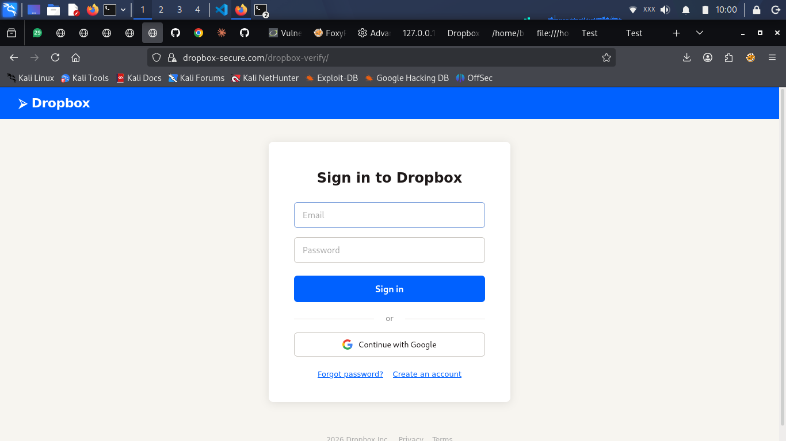
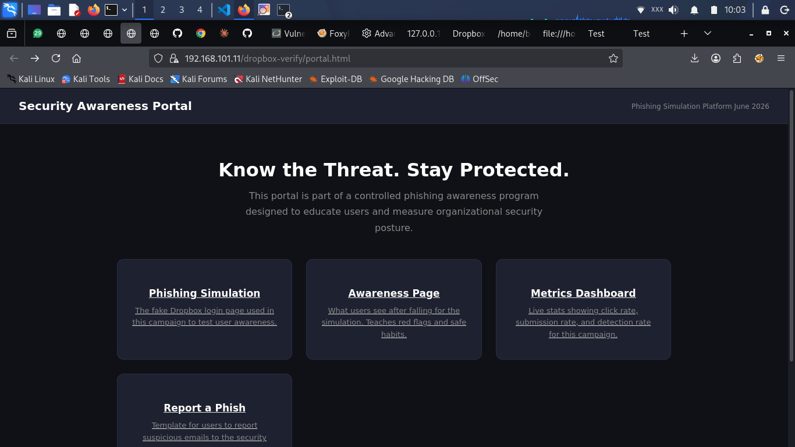
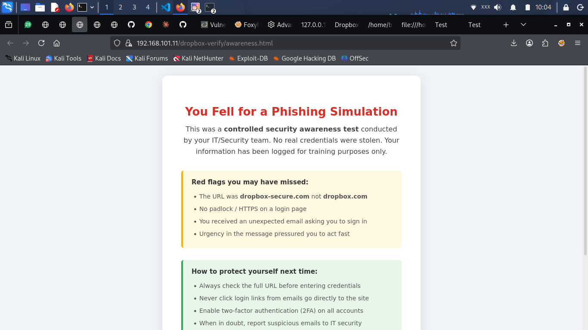
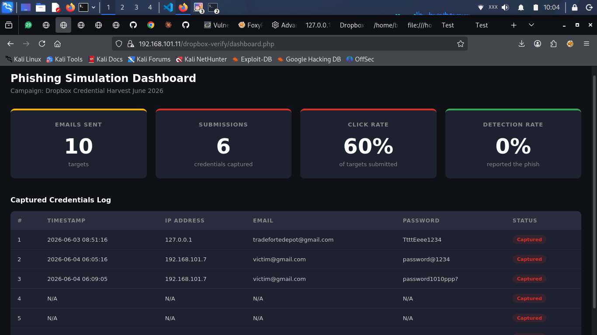
Built and deployed a phishing awareness simulation with a cloned login page, credential capture, a security awareness redirect, and a real-time admin dashboard to track who clicked.
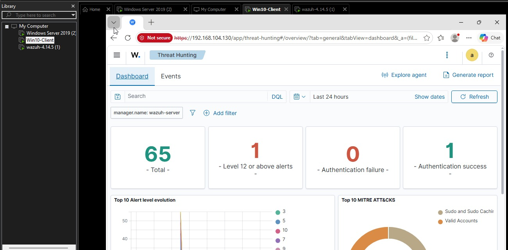
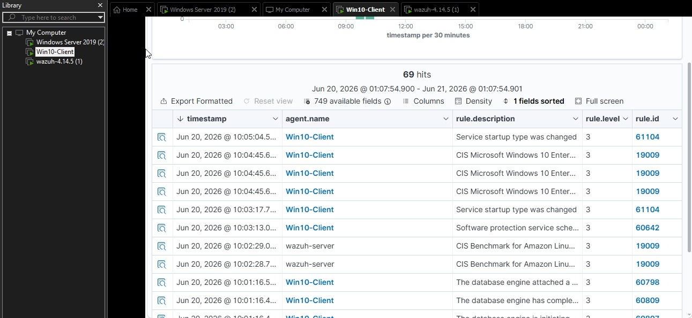
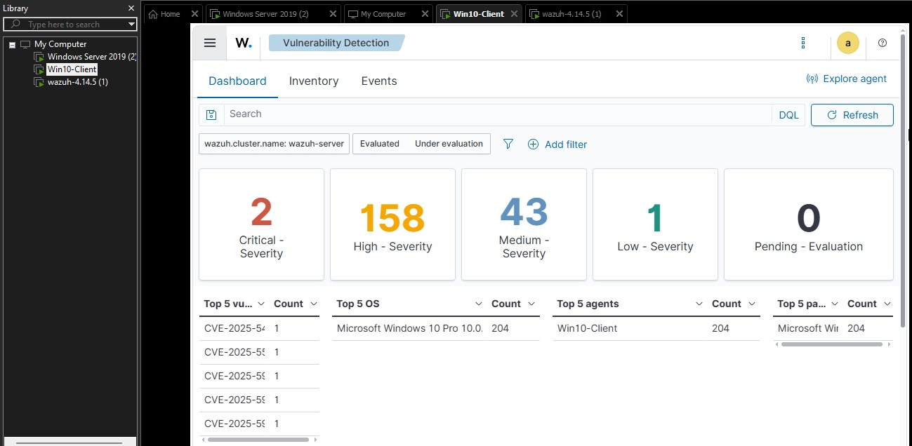
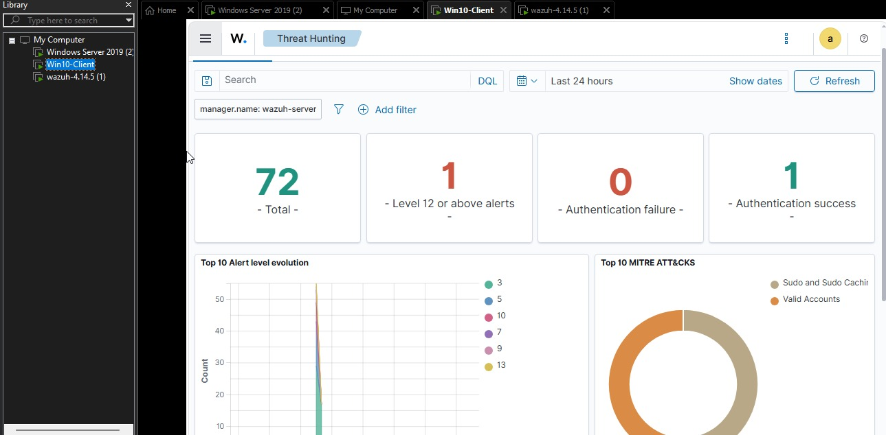
Built a multi-VM lab with Wazuh SIEM integrated with MITRE ATT&CK, detecting live attack simulations including brute force and persistence techniques.
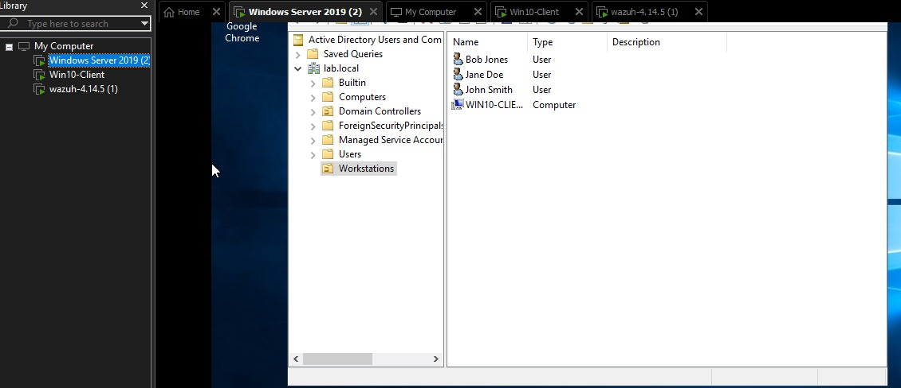
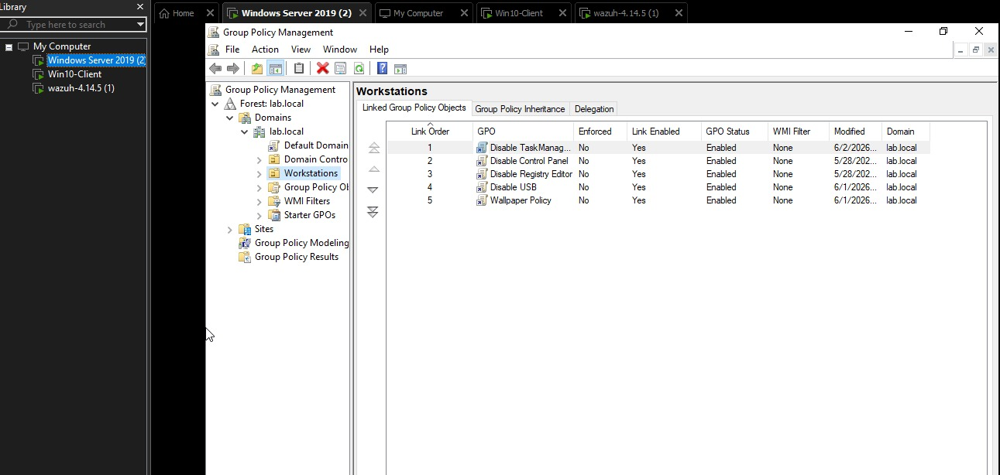
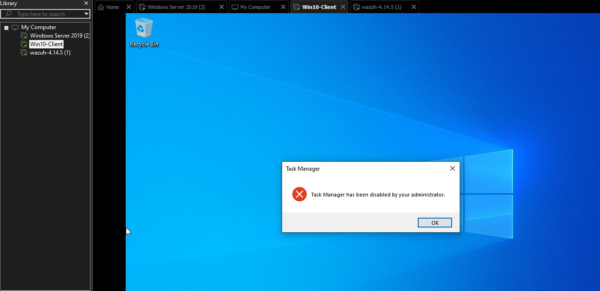
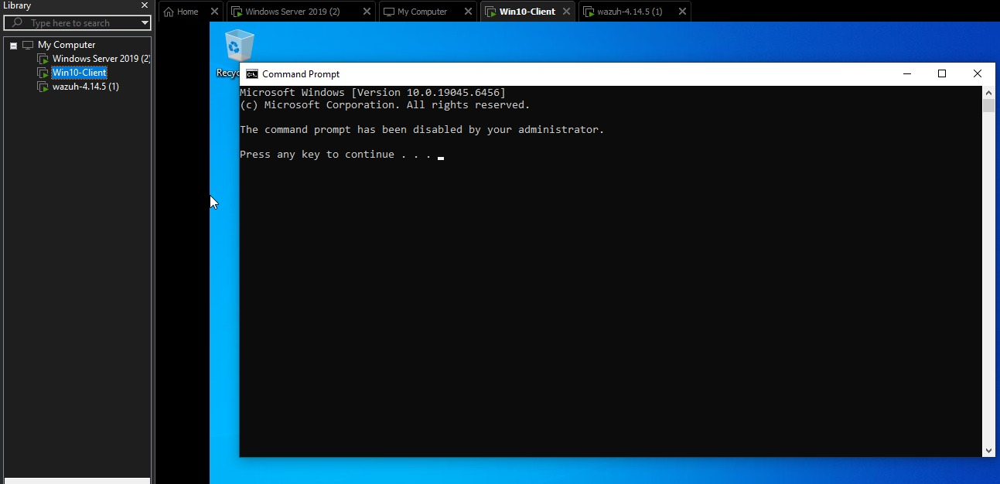
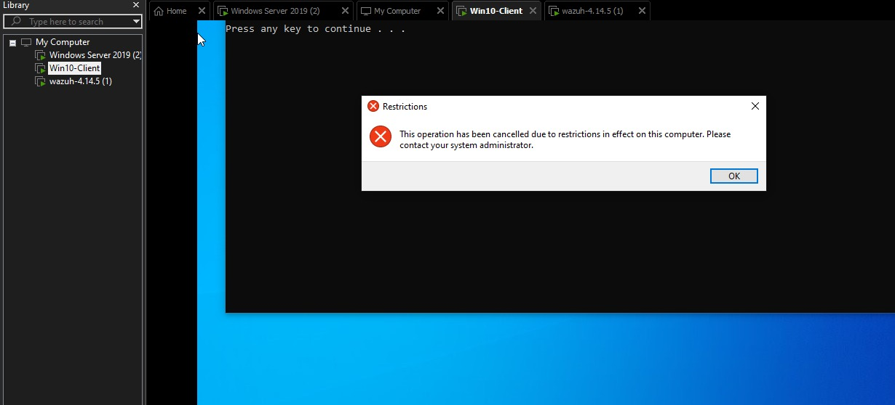
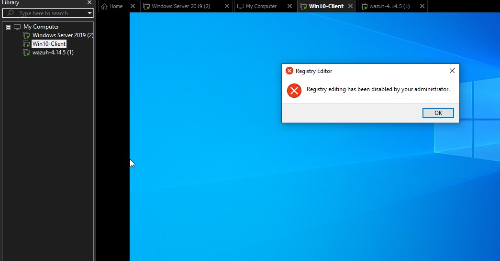
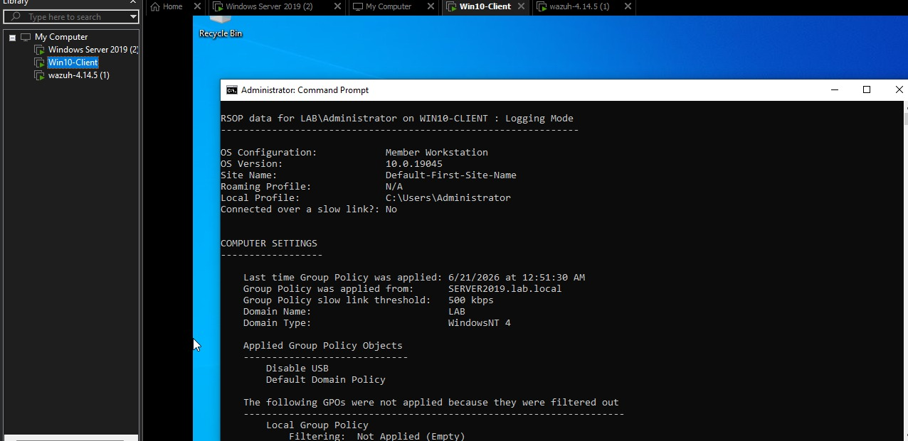
Deployed a Windows Server 2019 Domain Controller with GPO-based restrictions for USB, Registry Editor, Control Panel, and Task Manager.
Conducted a full network penetration test on a live home network. Performed host discovery, service enumeration, OS detection, and vulnerability scanning using Nmap. Identified open services, mapped findings to MITRE ATT&CK framework, assigned CVSS scores, and generated a professional redacted PDF report.
View ReportEmail: henryeuwaezuoke@gmail.com
LinkedIn: linkedin.com/in/henry-uwaezuoke-34681b411
Phone: +2348038676335
WhatsApp: Chat on WhatsApp